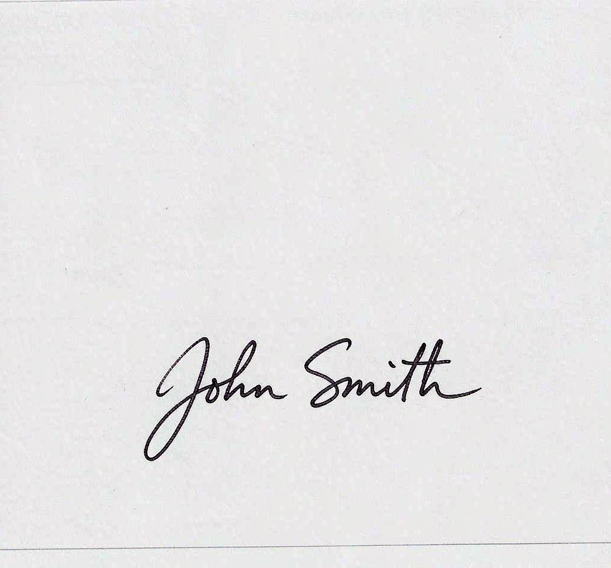
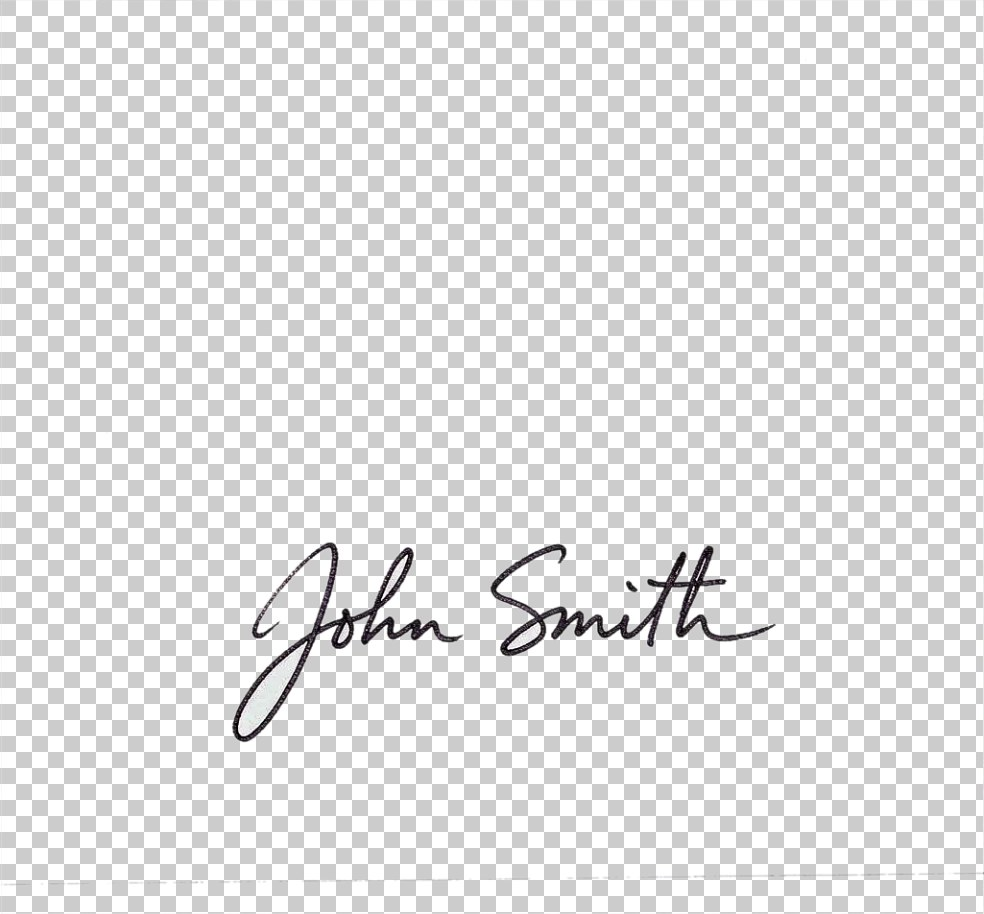
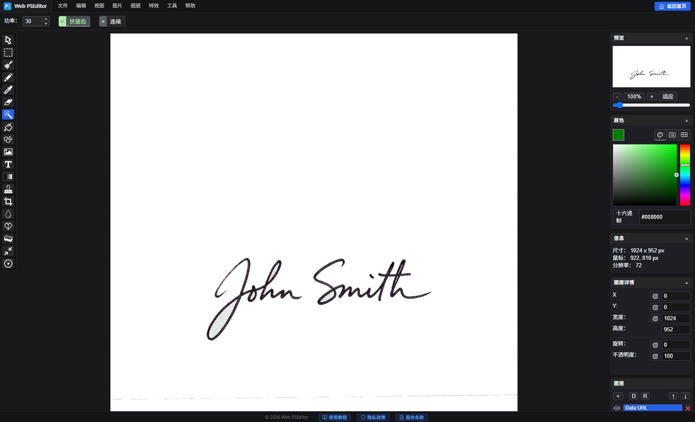

实战教程：手写电子签名背景透明化提取全攻略
在远程办公与电子化办公普及的今天，PDF 合同、发票报销单及电子证明经常需要附上个人真实手写签名。很多朋友用手机拍下白纸上的签名后，往往因为光线不均、纸张泛黄、带有阴影而无法直接贴入文档。本篇指南将教你使用 Web PSEditor 快速将拍照签名转为纯净、无阴影的透明背景 PNG 图章。


在白纸上用黑色签字笔手写签名，手机正面平拍后，将照片直接拖入 Web PSEditor 画布。
使用左侧工具栏的 裁剪工具（Crop），框选出签名主体区域并按回车确认，去除四周不必要的多余桌面和阴影边缘。
手机拍出的白纸通常呈灰色或带有渐变色，必须先让纸张变成纯白（#FFFFFF）：
1. 点击顶部菜单 【图像】 -> 【色彩调整】 -> 【黑白（Grayscale）】，去除纸张泛黄色差；
2. 打开 【图像】 -> 【色彩调整】 -> 【亮度/对比度】 或 【色阶/曲线】：适当拉高亮度和对比度，直到字迹变得极其黝黑纯粹，背景白纸完全变为纯白色。
要将纯白背景转为透明，有两种极其高效的方法：
方法 A（魔术橡皮擦透明化）：选择左侧 魔术橡皮擦工具（Magic Eraser），顶栏 强度（Power） 设为 20~40，直接点击白纸背景，白底瞬间消失并呈现棋盘状透明格；对残留的边角补点几笔即可全部清除。
方法 B（正片叠底无损使用）：如果签名是直接嵌入到 Word 或具备白底的 PDF 中，直接在图层混合模式中选择 正片叠底（Multiply），白色会被算法自动忽略成透明！
完成后点击 【文件】 -> 【另存为】 -> 【PNG 格式】，即可得到通用的透明电子签名图片。

魔术橡皮擦 vs 正片叠底：该用哪种？
| 方法 | 适用场景 | 原理与特点 |
|---|---|---|
| 魔术橡皮擦 + PNG | 制作可复用的签名图章，用于 Word、PDF、电子签批平台 | 永久删除纸张背景，导出真正的透明 PNG，一劳永逸 |
| 正片叠底混合模式 | 在编辑器内把拍照签名直接叠放到文档图上 | 非破坏性 —— 白色像素只是不再显示，不删除任何像素 |
| 套索 + 删除 | 纸纹复杂、阴影严重的签名照片 | 沿笔画手动圈选，色彩识别失效时的兜底方案 |
- 斜角度拍摄 —— 透视变形会导致笔画粗细不均。务必垂直俯拍并保证光线均匀。
- 强度（Power）过低 —— 灰色纸面上会残留半透明"鬼影"。把强度提到 30~40 再补点残留区域。
- 对比度拉过头 —— 笔画细尾容易断裂丢失。擦除前先放大到 200% 检查笔画完整性。
- 存成 JPG —— 透明通道会被丢弃、背景变白。请务必导出 PNG。
常见问题 FAQ
为什么提取出的签名笔画周围有灰色光晕？
纸张偏灰且强度值偏低所致。把强度（Power）调到 30~40，再点击光晕区域即可，棋盘格透出来就说明清除干净了。
手机照片带阴影，还能提取吗？
可以。先用亮度/对比度把阴影压成接近纯白，再用魔术橡皮擦点击；阴影严重时改用套索工具沿笔画逐段处理更稳妥。
透明签名怎么插入 Word 或 PDF？
导出 PNG 后，在 Word 或 PDF 编辑器中【插入】 -> 【图片】即可。背景透明，签名会干净地浮在文字行和签名栏上方。
签名图片会被上传到服务器吗？
不会。Web PSEditor 100% 纯本地运行 —— 签名始终在浏览器内存中处理，即使断网也能完整操作，绝不外传。
可以把签名改成蓝色钢笔等其它颜色吗？
可以。提取透明通道后，在签名图层上方新建颜色图层并创建剪贴蒙版（或锁定透明像素直接涂抹），笔画颜色即被替换，透明背景保持不变。
相关教程推荐
电子签名属于**高度敏感的个人身份凭证**。普通在线工具会将图片上传至云端服务器，存在被爬取甚至滥用的潜在风险。Web PSEditor 全流程运行在您的本地浏览器沙箱中，断网也可完整操作，杜绝任何签名泄露隐患！
无需安装软件，立即在浏览器中制作属于你的无水印透明电子签名图章，100% 隐私安全。